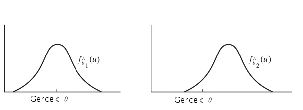

Maksimum olurluk bir kestirme hesabı yapmanın yolu. Bu teknik ile verinin her noktası teker teker olasılık fonksiyonuna geçilir, ve elde edilen olasılık sonuçları birbiri ile çarpılır. Çoğunlukla formül içinde bilinmeyen bir(kaç) parametre vardır, ve bu çarpım sonrası, içinde bu parametre(ler) olan yeni bir formül ortaya çıkar. Püf nokta şudur ki eğer bir model “doğru” ya da doğruya yakın modelse o veri üzerinde işletilince yüksek olasılık değerler rapor edilecektir. Öyle ya, mesela Gaussian \(N(10,2)\) dağılımı var ise, 60,90 gibi değerlerin “olurluğu’’ düşüktür.
Demek ki elimizde bir maksimizasyon, optimizasyon problemi var. O zaman çarpımlardan elde edilen nihai formülün kısmı türevi alınıp sıfıra eşitlenince cebirsel bazı teknikler ile bilinmeyen parametre bulunabilir. Bu sonuç eldeki veri bağlamında en mümkün (olur) parametre değeridir. Gaussin üzerinde örnek,
\[ f(x;\mu,\sigma) = \frac{1}{\sigma\sqrt{2\pi}} \exp \bigg\{ - \frac{1}{2\sigma^2}(x-\mu)^2 \bigg\} , \ x \in \mathbb{R} \]
Çarpım sonrası
\[ f(x_1,..,x_n;\mu,\sigma) = \prod \frac{1}{\sigma\sqrt{2\pi}} \exp \bigg\{ - \frac{1}{2\sigma^2}(x_i-\mu)^2 \bigg\} \]
\[ = \frac{(2\pi)^{-n/2}}{\sigma^n} \exp \bigg\{ - \frac{\sum (x_i-\mu)^2}{2\sigma^2} \bigg\} \]
Üstel kısım \(-n/2\) nereden geldi? Çünkü bölen olan karekökü üste çıkardık, böylece \(-1/2\) oldu, \(n\) çünkü \(n\) tane veri noktası yüzünden formül \(n\) kere çarpılıyor. Veri noktaları \(x_i\) içinde. Eğer log, yani \(\ln\) alırsak \(\exp\)’den kurtuluruz, ve biliyoruz ki log olurluğu maksimize etmek normal olurluğu maksimize etmek ile aynı şeydir, çünkü \(\ln\) transformasyonu monoton bir transformasyondur. Ayrıca olurluk içbukeydir (concave) yani kesin tek bir maksimumu vardır.
\[ \ln f = -\frac{1}{2} n \ln (2\pi) - n \ln \sigma - \frac{\sum (x_i-\mu)^2}{2\sigma^2} \]
Türevi alıp sıfıra eşitleyelim
\[ \frac{\partial (\ln f)}{\partial \mu} = \frac{\sum (x_i-\mu)^2}{2\sigma^2} = 0 \]
\[ \hat{\mu} = \frac{\sum x_i }{n} \]
Bu sonuç (1)‘deki formül, yani örneklem ortalaması ile aynı! Fakat buradan hemen bir bağlantıya zıplamadan önce şunu hatırlayalım - örneklem ortalaması formülünü biz tanımladık. “Tanım’’ diyerek bir ifade yazdık, ve budur dedik. Şimdi sonradan, verinin dağılımının Gaussian olduğunu farzederek, bu verinin mümkün kılabileceği en optimal parametre değeri nedir diye hesap ederek aynı formüle eriştik, fakat bu bir anlamda bir güzel raslantı oldu.. Daha doğrusu bu aynılık Gaussian / Normal dağılımlarının”normalliği’’ ile alakalı muhakkak, fakat örnekleme ortalaması hiçbir dağılım faraziyesi yapmıyor, herhangi bir dağılımdan geldiği bilinen ya da bilinmeyen bir veri üzerinde kullanılabiliyor. Bunu unutmayalım. İstatistikte matematiğin lakaytlaşması (sloppy) kolaydır, o sebeple neyin tanım, neyin hangi faraziyeye göre optimal, neyin nüfus (population) neyin örneklem (sample) olduğunu hep hatırlamamız lazım.
Devam edelim, maksimum olurluk ile \(\hat{\sigma}\) hesaplayalım,
\[ \frac{\partial (\ln f)}{\partial \sigma} = -\frac{n}{\sigma} + \frac{\sum (x_i-\mu)^2}{2\sigma^3} = 0 \]
Cebirsel birkaç düzenleme sonrası ve \(\mu\) yerine yeni hesapladığımız \(\hat{\mu}\) kullanarak,
\[ \hat{\sigma}^2 = \frac{\sum (x_i-\hat{\mu})^2}{n} \]
Bu da örneklem varyansı ile aynı!
Yansızlık (Unbiasedness)
Tahmin edicilerin kendileri de birer rasgele değişken olduğu için her örneklem için değişik değerler verirler. Diyelim ki \(\theta\) için bir tahmin edici \(\hat{\theta}\) hesaplıyoruz, bu \(\hat{\theta}\) gerçek \(\theta\) için bazı örneklemler için çok küçük, bazı örneklemler için çok büyük sonuçlar (tahminler) verebilecektir. Kabaca ideal durumun, az çıkan tahminlerin çok çıkan tahminleri bir şekilde dengelemesi olduğunu tahmin edebiliriz, yani tahmin edicinin üreteceği pek çok değerin \(\theta\)’yı bir şekilde “ortalaması’’ iyi olacaktır.

Bu durumu şöyle açıklayalım, madem tahmin ediciler birer rasgele değişken, o zaman bir dağılım fonksiyonları var. Ve üstteki resimde örnek olarak \(\hat{\theta_1},\hat{\theta_2}\) olarak iki tahmin edici gösteriliyor mesela ve onlara tekabül eden yoğunluklar \(f_{\hat{\theta_1}}, f_{\hat{\theta_1}}\). İdeal durum soldaki resimdir, yoğunluğun fazla olduğu yer gerçek \(\theta\)’ya yakın olması. Bu durumu matematiksel olarak nasıl belirtiriz? Beklenti ile!
Tanım
\(Y_1,..,Y_n\) üzerindeki \(\theta\) tahmin edicisi \(\hat{\theta}\)’den alınmış rasgele örneklem. Eğer tüm \(\theta\)’lar için \(E(\hat{\theta}) = \theta\) işe, bu durumda tahmin edicinin yansız olduğu söylenir.
Örnek olarak maksimum olurluk ile önceden hesapladığımız \(\hat{\sigma}\) tahmin edicisine bakalım. Bu ifade
\[ \hat{\sigma}^2 = \frac{1}{n}\sum (Y_i-\hat{\mu})^2 \]
ya da
\[ \hat{\sigma}^2 = \frac{1}{n}\sum_i (Y_i-\bar{Y})^2 \]
ile belirtildi. Tahmin edici \(\hat{\sigma}^2\), \(\sigma^2\) için yansız midir? Tanımımıza göre eğer tahmin edici yansız ise \(E(\hat{\sigma}^2) = \sigma^2\) olmalıdır.
Not: Faydalı olacak bazı eşitlikler, daha önceden gördüğümüz
\[ Var(X) = E(X^2) - (E(X)^2)\]
ve sayısal ortalama \(\bar{Y}\)’nin beklentisi \(E({\bar{Y}}) = E(Y_i)\), ve \(Var(\bar{Y}) = 1/n Var(Y_i)\).
Başlayalım,
\[ E(\hat{\sigma}^2) = E\bigg(\frac{1}{n}\sum_i (Y_i-\bar{Y})^2 \bigg)\]
Parantez içindeki \(1/n\) sonrasındaki ifadeyi açarsak,
\[ \sum_i (Y_i-\bar{Y})^2 = \sum_i (Y_i^2-2Y_i\bar{Y}+ \bar{Y}^2)\]
\[ = \sum_iY_i^2 -2\sum_i Y_i\bar{Y} + n\bar{Y}^2 \]
\(\sum_i Y_i\)’nin hemen yanında \(\bar{Y}\) görüyoruz. Fakat \(\bar{Y}\)’nin kendisi zaten \(1/n \sum_i Y_i\) demek değil midir? Ya da, toplam içinde her \(i\) için değişmeyecek \(\bar{Y}\)’yi toplam dışına çekersek, \(\bar{Y}\sum_iY_i\) olur, bu da \(\bar{Y} \cdot n \bar{Y}\) demektir ya da \(n\bar{Y}^2\),
\[ = \sum_iY_i^2 -2 n\bar{Y}^2 + n\bar{Y}^2 \]
\[ = \sum_iY_i^2 -n\bar{Y}^2 \]
Dikkat, artık \(-n\bar{Y}^2\) toplama işleminin dışında. Şimdi beklentiye geri dönelim,
\[ = E \bigg( \frac{1}{n} \bigg( \sum_iY_i^2 -n\bar{Y}^2 \bigg) \bigg) \]
\(1/n\) dışarı çekilir, beklenti toplamdan içeri nüfuz eder,
\[ = \frac{1}{n} \bigg( \sum_i E(Y_i^2) -n E(\bar{Y}^2) \bigg) \]
Daha önce demiştik ki (genel bağlamda)
\[ Var(X) = E(X^2) - (E(X)^2)\]
Bu örnek için harfleri değiştirirsek,
\[ Var(Y_i) = E(Y_i^2) - E(Y_i)^2\]
Yani
\[ E(Y_i^2) = Var(Y_i) + E(Y_i)^2 \]
\(E(Y_i) = \mu\) oldugunu biliyoruz,
\[ E(Y_i^2) = Var(Y_i) + \mu^2 \]
Aynısını \(E(\bar{Y}^2)\) için kullanırsak,
\[ E(\bar{Y}^2) = Var(\bar{Y}) + E(\bar{Y})^2 \]
\(E(\bar{Y}) = \mu\),
\[ E(\bar{Y}^2) = Var(\bar{Y}) + \mu^2 \]
\[ = \frac{1}{n} \bigg( \sum_i Var(Y_i) + \mu^2 -n (Var(\bar{Y}) + \mu^2 ) \bigg) \]
\(Var(Y_i) = \sigma\), ve başta verdiğimiz eşitlikler ile beraber
\[ = \frac{1}{n} \bigg( \sum_i (\sigma^2 + \mu^2) -n (\frac{\sigma^2}{n} + \mu^2 ) \bigg) \]
Tekrar hatırlatalım, \(\sum_i\) sadece ilk iki terim için geçerli, o zaman, ve sabit değerleri \(n\) kadar topladığımıza göre bu aslında bir çarpım işlemi olur,
\[ = \frac{1}{n} \bigg( n\sigma^2 + n\mu^2 -n (\frac{\sigma^2}{n} + \mu^2 ) \bigg) \]
\[ = \sigma^2 + \mu^2 -\frac{\sigma^2}{n} - \mu^2 \]
\[ = \sigma^2 -\frac{\sigma^2}{n} \]
\[ = \frac{n\sigma^2}{n} -\frac{\sigma^2}{n} \]
\[ = \frac{n\sigma^2 - \sigma^2}{n} \]
\[ = \frac{\sigma^2(n-1)}{n} \]
\[ = \sigma^2 \frac{n-1}{n} \]
Görüldüğü gibi eriştiğimiz sonuç \(\sigma^2\) değil, demek ki bu tahmin edici yansız değil. Kontrol tamamlandı.
Fakat eriştiğimiz son denklem bize başka bir şey gösteriyor, eğer üstteki sonucu \(\frac{n}{n-1}\) ile çarpsaydık, \(\sigma^2\) elde etmez miydik? O zaman yanlı tahmin ediciyi yansız hale çevirmek için, onu \(\frac{n}{n-1}\) ile çarparız ve
\[ \frac{n}{n-1} \frac{1}{n}\sum_i (Y_i-\bar{Y})^2 \]
\[ = \frac{1}{n-1}\sum_i (Y_i-\bar{Y})^2 \]
Üstteki ifade \(\sigma^2\)’nin yansız tahmin edicisidir.
Hesap için kullandığınız kütüphanelerin yanlı mı yansız mı hesap yaptığını bilmek iyi olur, mesela Numpy versiyon 1.7.1 itibariyle yanlı standart sapma hesabı yapıyor, fakat Pandas yansız olanı kullanıyor (Pandas versiyonu daha iyi)
import pandas as pd
arr = np.array([1,2,3])
print ('numpy', np.std(arr))
print ('pandas', pd.DataFrame(arr).std().iloc[0])numpy 0.816496580928
pandas 1.0Binom ve \(\theta\) İçin Maksimum Olurluk Tahmini [3, Lecture 5]
Bir yanlı madeni para tura gelme ihtimali \(\theta\) ise, \(n\) deneyde \(k\) tura olasılık kütle fonksiyonu binom dağılımı Binom(n,k) ile temsil edilebilir,
\[ P(X = k) = {n \choose k} \theta^k(1-p)^{n-k} \]
Log olurluk fonksiyonu \(LL(\theta)\) olurluk fonksiyonunun log alınmış halidir,
\[ LL(\theta) = \log \left( {n \choose k} \theta^k(1-\theta)^{n-k} \right) \]
Şimdi maksimum olurluk tahmini için üstteki ifadeyi \(\theta\) bağlamında maksimize etmek isteriz, log ifadesini uygulayalım,
\[ = \log {n \choose k} + k \log(\theta) + (n-k) \log(1-\theta) \]
Maksimum için \(\theta\)’ya göre türevi alalım ve sıfıra eşitleyelim,
\[ \frac{dL}{d\theta} = \frac{k}{\theta} - \frac{n-k}{1-\theta} = 0 \]
\(\theta\) için çözersek,
\[ \frac{k}{\theta} = \frac{n-k}{1-\theta} \]
\[ k(1-\theta) = \theta (n-k) \]
\[ k - k\theta = n\theta - k\theta \]
\[ k = n \theta \]
\[ \theta = \frac{k}{n} \]
Bernoulli dağılımı Binom dağılımına çok benzer, sadece onun baş kısmında kombinasyon ifadesi yoktur. Fakat o ifade \(\theta\)’ya göre türevde nasıl olsa yokolacağına göre Bernoulli dağılımı için de tahmin edici aynıdır.
Maksimum Olurluk hesabı için bir bilinmeyen parametre, diyelim ki \(\theta\)’yi kestirmeye uğraştık ve bunu için verinin formülünü oluşturduk. Bu formülde parametre sabit idi fakat bilinmiyordu. Eğer perspektifimizi biraz değiştirirsek ve bilinmeyen parametre \(\theta\)’yi da bir rasgele değişken olarak addedersek, bu bize tahminsel hesaplama açısından biraz daha esneklik sağlayacaktır.
Bakış açısı Bayes [2] olacak, bulmak istediğimiz \(\theta_{MAP}\) tahmini, bunun için olurluk \(P(\theta | x)\)’yi maksimize eden bir \(\theta\) bulmaya uğraşacağız. \(P(x|\theta)\) içeren formül Bayes yaklaşımıyla şöyledir,
\[ P(\theta | x) = \frac{P(x|\theta) P(\theta) }{P(x)} \qquad (3) \]
\(P(\theta|x)\): Sonsal dağılım, bize verilmiş olan ham veriyi dikkate alınca tahmin \(\theta\)’nin olasılığı nedir? “Verilmiş olması” terimine dikkat, Bayes yaklaşımı ile veriyi bile bir rasgele değişken kabul ediyoruz, ve onun verilmiş olması, bu değişkenin koşulsal bir bağ ile birleşik dağılıma dahil edilmesini ima ediyor.
\(P(x|\theta)\): Olurluk, elimizdeki tahmin parametresini hesaba katarsak verinin olurluğu nedir?
\(P(\theta)\): Önsel dağılım. Hiçbir şeyi bilmeden önce tahminimizin olasılığı neydi?
\(P(x)\): Kısmi (marginal) olasılık. Mümkün tüm tahmin parametreleri üzerinden bakınca yeni elde edilen gözlemin olasılığı nedir [3]?
[1, sf. 183]’e bakarsak orada \(P(x)\)’in “çok kuvvetli bir iddiada bulunduğunu” söylüyor çünkü daha hiçbir veriyi toplamadan ya da işlemeden “o verinin ihtimalinin ne olduğunu biliyoruz”. Çok derin felsefi argümanlara girmeden önce \(P(x)\) hakkında şu somut noktayı bilmek gerekir, \(P(x)\)’in bir olurluk, yani o olurluğu tanımlayan fonksiyon dışında bir anlamı yoktur. Aslında \(P(x)\), aklımızdaki belli bir olurluk modelinin alabileceği tüm mümkün parametre değerlerinin ortalamasının bir sonucudur, matematiksel olarak
\[ P(x) = \int_\theta P(x | \theta) P(\theta) \ d\theta = \int_\theta P(x,\theta) \ d\theta \]
Yani \(P(x)\)’i \(P(x|\theta)\) dışında düşünmek pek anlamlı
değildir. Bu püf nokta ileride Bayessel çıkarsama (inference)
paketleriyle karşılaşınca faydalı olabilir (mesela pymc)
çünkü bu paketlerin üstteki entegrali hesaplamak için kapsamlı kodları
vardır. Demek ki \(P(x)\) hesaplamak
sadece düşünsel bir takla değil, ciddi kodlar gerektiren yaklaşık
entegral hesabı gerektiren bir işlemdir. Bizim bu yazıda kullanacağımız
matematik açısından \(P(x)\) hesabı
gerekli değil, bunun sebebini birazdan göreceğiz.
Bayes (3) formülüne dönelim. Maksimize etmek istediğimiz bu formülde gösterilen sol kısım, yani sonsal fonksiyon \(P(\theta | x)\), karşılaştırma yaparsak maksimum olurluk yöntemi sadece olurluğu maksimize ediyordu. Kendimize bir kolaylık sağlayalım, logaritma dışbükey (convex) bir fonksiyon, o zaman log alarak çarpımları toplama çevirirsek hala aynı maksimizasyon işlemini yapmış oluruz, yani
\[ L = \log P(\theta | x) = \log l(\theta) + \log P(\theta) - \log P(x) \]
Log sayesinde çarpımlar toplam bölme çıkartma oldu. Maksimize etmek istediğimiz \(L\). Ayrıca maksimizasyon \(\theta\) temelli olacak, bu durumda \(P(x)\) kısmını yok sayabiliriz çünkü optimizasyonda hiçbir rol oynamayacak. Sadece alttaki formül yeterli,
\[ L = \log P(\theta | x) = \log l(\theta) + \log P(\theta) \]
Daha önce gösterilen yazı-tura atmak probleminin çözümünü bulalım. Onsel dağılım \(Beta(\alpha,\beta)\) olsun,
\[ P(\theta) = Beta(\alpha,\beta) = \frac{\theta^{\alpha-1} (1-\theta)^{\beta-1}}{B(\alpha,\beta)} \]
Binom dağılımı
\[ P(x | \theta) = \bigg(\begin{array}{c} n \\ k \end{array} \bigg) \theta^k (1-\theta)^{n-k} \]
O zaman
\[ P(\theta | x) \approx \bigg(\begin{array}{c} n \\ k \end{array} \bigg) \theta^k (1-\theta)^{n-k} \cdot \frac{\theta^{\alpha-1} (1-\theta)^{\beta-1}}{B(\alpha,\beta)} \]
Log alınca ve sabit olan terimleri toparlayınca
\[ \log P(\theta | x) \approx \underbrace{\log \left[ \bigg(\begin{array}{c} n \\ k \end{array} \bigg) \frac{1}{B(\alpha,\beta)} \right]}_{\text{Sabitler}} + \log \left[ \theta^{k + \alpha - 1} (1-\theta)^{n - k + \beta - 1} \right] \]
Aynen \(P(x)\)’i normalize edici sabit oldugu ve optimizasyon etkilemedigi icin disarida biraktigimiz gibi ustteki sabitler grubunu da atabiliriz,
\[ \log P(\theta | x) \approx \log \left[ \theta^{k + \alpha - 1} (1-\theta)^{n - k + \beta - 1} \right] \]
Ve tabii ki log alınca üsteller çarpan haline gelirler,
\[ \log P(\theta | x) \approx (k + \alpha - 1) \log(\theta) + (n - k + \beta - 1) \log(1-\theta) \]
Şimdi üstteki ifadenin \(\theta\)’ya göre türevini alıp sıfıra eşitlersek, optimal değeri bulabiliriz [3, Lecture 5],
\[ \frac{d}{d\theta} \log P(\theta | x) = \frac{k + \alpha - 1}{\theta} - \frac{n - k + \beta - 1}{1 - \theta} = 0 \]
\[ \theta_{MAP} = \frac{k + \alpha - 1}{n + \alpha + \beta - 2} \]
Eğer Beta(6,6) onsel dağılımı için aynı türetimi sympy
ile yapmak istersek [1, sf. 184],
import sympy
from sympy import stats as st
from sympy.abc import p,k,n
obj=sympy.expand_log(sympy.log(p**k*(1-p)**(n-k)* st.density(st.Beta('p',6,6))(p)))
sol=sympy.solve(sympy.simplify(sympy.diff(obj,p)),p)[0]
print (sol)(k + 5)/(n + 10)Aynı sonuca ulaştık.
Üstteki sonucun maksimum olurluk tahmini \(k/n\)’den farklı olduğuna dikkat edelim. Aslında her iki yöntem de maksimize edilen ifade içinde olurluk vardı, fakat MAP ile bir fark onsel dağılımın da çarpıma dahil edilmiş olmasıydı. Fakat eğer önsel dağılımı birörnek (uniform) dağılım olarak alsaydık, ki bu elimizde hiçbir onsel bilgi olmadığı anlamına gelirdi, o zaman çarpıma dahil edilen bir sabit olacaktı, ve o bölüm maksimizasyona dahil olmazdı, bu durumda maksimum olurluk ile aynı sonucu elde ederdik.
Gaussian Önsel Gaussian Sonsal
Veriye bakarak tek boyutlu Gaussian’ın ortalaması \(\mu\)’yu nasıl öğreniriz, öyle ki \(P(x|\mu) \sim N(\mu,\sigma^2)\). Diyelim ki \(\mu\) hakkında bir hipotezimiz var, onun aşağı yukarı ne büyüklükte olduğunu biliyoruz [4, sf. 52], ve bu “aşağı yukarı”, “tahmin” sözlerini matematiksel olarak bir önsel Gaussian olarak modele sokmak istiyoruz. Yani \(\mu\)’nun 10 civarında ve standart sapma 5 bağlamında olduğunu sisteme dahil etmek için \(P(\mu) \sim N(\mu_0,\sigma_0^2)\), ki \(\mu_0 = 10,\sigma_0=5\). Daha once gördüğümüz notasyona bağlantı kurmak için tahmin edilecek parametre \(\theta=\mu\), ayrıca daha önce olduğu gibi \(x = [x_1,x_2,..,x_n]\). Bayes formülü o zaman,
\[ P(\mu | x) = \frac{P(x | \mu) P(\mu) }{P(x)} \]
\[ = \alpha \prod _{k=1}^{n} P(x_k | \mu) P(\mu) \qquad (4) \]
\(\alpha\) büyüklüğü iki üstteki formüldeki bölen, o bir ölçekleme büyüklüğü, veri \(x\)’e bağlı ama \(\mu\)’e bağlı değil.
Demiştik ki
\[ P(x|\mu) \sim N(\mu,\sigma^2) = \frac{1}{\sqrt{2\pi} \sigma} \exp \left[ -\frac{1}{2} \left( \frac{x - \mu}{\sigma} \right)^2 \right] \]
\[ P(\mu) \sim N(\mu_0,\sigma_0^2) = \frac{1}{\sqrt{2\pi} \sigma_0} \exp \left[ -\frac{1}{2} \left( \frac{\mu - \mu_0}{\sigma_0} \right)^2 \right] \]
O zaman (4) formülünü şu şekilde açabiliriz,
\[ P(\mu | x) = \alpha \prod _{k=1}^{n} \frac{1}{\sqrt{2\pi} \sigma} \exp \left[ -\frac{1}{2} \left( \frac{x - \mu}{\sigma} \right)^2 \right] \frac{1}{\sqrt{2\pi} \sigma_0} \exp \left[ -\frac{1}{2} \left( \frac{\mu - \mu_0}{\sigma_0} \right)^2 \right] \]
\(\mu\)’ye bağlı olmayan terimleri başka bir büyüklük içinde topladık, üstte \(\alpha\). Üstteki çarpımda \(\exp\) içindekileri birleştirip dış çarpım ifadesini \(\exp\) içine toplam olarak sokabiliriz, ve yine sabitleri toparlayıp geri kalanları yazarsak,
\[ = \alpha' \exp \left[ -\frac{1}{2} \left( \sum_{k=1}^n \left( \frac{\mu - x_k}{\sigma} \right)^2 + \left( \frac{\mu - \mu_0}{\sigma_0} \right)^2 \right) \right] \]
Simdi ustteki formulun kendisinin bir Guassian dagilimi olup olmadigini bilmek istiyoruz. Ustel icindeki carpimlari yapalim, acalim,
\[ \text{Üstel} = -\frac{1}{2} \left[ \sum_{k=1}^n \frac{(\mu^2 - 2\mu x_k + x_k^2)}{\sigma^2} + \frac{(\mu^2 - 2\mu\mu_0 + \mu_0^2)}{\sigma_0^2} \right] \]
Şimdi, terimleri \(\mu\)’nün kuvvetlerine göre (\(\mu^2\) terimleri ve \(\mu\) terimleri) gruplayalım. \(x_k^2\) ve \(\mu_0^2\) terimleri \(\mu\)’ya göre sabittir ve yeni normalization sabiti \(\alpha''\) içine yutulacaktır.
\[ = -\frac{1}{2} \left[ \mu^2 \left( \frac{n}{\sigma^2} + \frac{1}{\sigma_0^2} \right) - 2\mu \left( \frac{1}{\sigma^2}\sum_{k=1}^n x_k + \frac{\mu_0}{\sigma_0^2} \right) + \text{(sabit terimler)} \right] \]
Yani şu ifadeyi yazabiliriz şu anda,
\[ P(\mu | x) = \alpha'' \exp \left[ -\frac{1}{2} \left\{ \mu^2 \left( \frac{n}{\sigma^2} + \frac{1}{\sigma_0^2} \right) - 2\mu \left( \frac{1}{\sigma^2}\sum_{k=1}^n x_k + \frac{\mu_0}{\sigma_0^2} \right) \right\} \right] \]
Gaussian dağılım eşleşmesine gelelim. Genel bir Gaussian dağılım \(N(\mu_n, \sigma_n^2)\) için formun şu olduğunu biliyoruz:
\[ p(\mu | x) = \frac{1}{\sqrt{2\pi} \sigma_n} \exp \left[ -\frac{1}{2} \left( \frac{\mu^2}{\sigma_n^2} - \frac{2\mu\mu_n}{\sigma_n^2} + \frac{\mu_n^2}{\sigma_n^2} \right) \right] \]
Bunu \(\mu^2\) ve \(\mu\) terimlerini gruplayarak da yazabiliriz:
\[ p(\mu | x) = \frac{1}{\sqrt{2\pi} \sigma_n} \exp \left[ -\frac{\mu_n^2}{2\sigma_n^2} \right] \exp \left[ -\frac{1}{2} \left( \frac{1}{\sigma_n^2} \mu^2 - \frac{2\mu_n}{\sigma_n^2} \mu \right) \right] \]
\(\exp \left[ -\frac{\mu_n^2}{2\sigma_n^2} \right]\) terimi \(\mu\)’ya göre bir sabittir ve normalization’ın bir parçası olacaktır. Biz \(\mu^2\) ve \(\mu\)’nün katsayılarıyla ilgileniyoruz.
Türettiğimiz son dağılımın üssünü, genel normal dağılım formunun üssüyle karşılaştırıyoruz:
Türettiğimiz son dağılımdan
\(\mu^2\) katsayısı: \(-\frac{1}{2} \left( \frac{n}{\sigma^2} + \frac{1}{\sigma_0^2} \right)\)
\(\mu\) katsayısı: \(-\frac{1}{2} \cdot (-2) \left( \frac{1}{\sigma^2} \sum_{k=1}^n x_k + \frac{\mu_0}{\sigma_0^2} \right) = + \left( \frac{1}{\sigma^2} \sum_{k=1}^n x_k + \frac{\mu_0}{\sigma_0^2} \right)\)
Genel normal dağılım formundan \(N(\mu_n, \sigma_n^2)\):
\(\mu^2\) katsayısı: \(-\frac{1}{2} \left( \frac{1}{\sigma_n^2} \right)\)
\(\mu\) katsayısı: \(+\left( \frac{\mu_n}{\sigma_n^2} \right)\)
İki ifadenin tüm \(\mu\) değerleri için aynı olabilmesi için, katsayıların eşit olması gerekir.
\(\mu^2\) katsayılarını eşitlemek:
\[ -\frac{1}{2} \left( \frac{1}{\sigma_n^2} \right) = -\frac{1}{2} \left( \frac{n}{\sigma^2} + \frac{1}{\sigma_0^2} \right) \]
Her iki taraftaki \(-\frac{1}{2}\)’ler sadeleşir ve suna erisiriz,
\[ \frac{1}{\sigma_n^2} = \frac{n}{\sigma^2} + \frac{1}{\sigma_0^2} \]
\(\mu\) katsayılarını eşitlemek:
\[ \frac{\mu_n}{\sigma_n^2} = \frac{n}{\sigma^2} m_n + \frac{\mu_0}{\sigma_0^2} \]
ki \(m_n = 1/n \sum x_k\).
\(\mu_n,\sigma_n\) bulmak icin
\[ \sigma_n^2 = \frac{1}{\frac{n}{\sigma^2} + \frac{1}{\sigma_0^2}} = \frac{\sigma_0^2 \sigma^2}{n\sigma_0^2 + \sigma^2} \]
\(\mu_n\)’yi bulmak için, üstteki denklemin her iki tarafını \(\sigma_n^2\) ile çarpalım,
\[ \mu_n = \sigma_n^2 \left( \frac{n}{\sigma^2} m_n + \frac{\mu_0}{\sigma_0^2} \right) \]
Şimdi yukarıdaki \(\sigma_n^2\) ifadesini yerine koyalım,
\[ \mu_n = \frac{\sigma_0^2 \sigma^2}{n\sigma_0^2 + \sigma^2} \left( \frac{n}{\sigma^2} m_n + \frac{\mu_0}{\sigma_0^2} \right) = \frac{n\sigma_0^2}{n\sigma_0^2 + \sigma^2} m_n + \frac{\sigma^2}{n\sigma_0^2 + \sigma^2} \mu_0 \]
Bunlar [4, sf. 53]’te görülen sonuçlardır. Bu formüller önsel bilginin veriyle nasıl birleştirildiğini ve böylece bir sonsal yoğunluk \(P(\mu|x)\) elde edebileceğimizi gösteriyor. Kabaca ifade etmek gerekirse \(\mu_n\) büyüklüğü \(n\) veri noktası gözlemledikten sonra elimizdeki en iyi \(\mu\) tahminidir ve \(\sigma_n^2\) bu tahmin etrafındaki kararsızlığı gösterir.
Kaynaklar
[1] Unpingco, Python for Probability, Statistics and Machine Learning
[2] Bayramli, Istatistik, Olasılık, Dağılımlar, Giriş
[3] Nath, CS 217: Artificial Intelligence and Machine Learning
[4] Duda, Pattern Classification and Scene Analysis